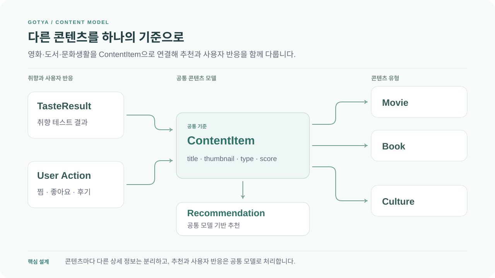
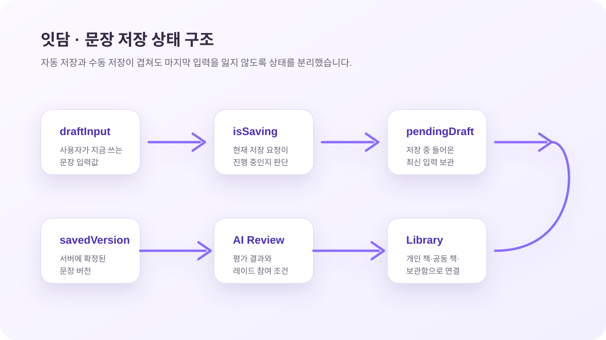
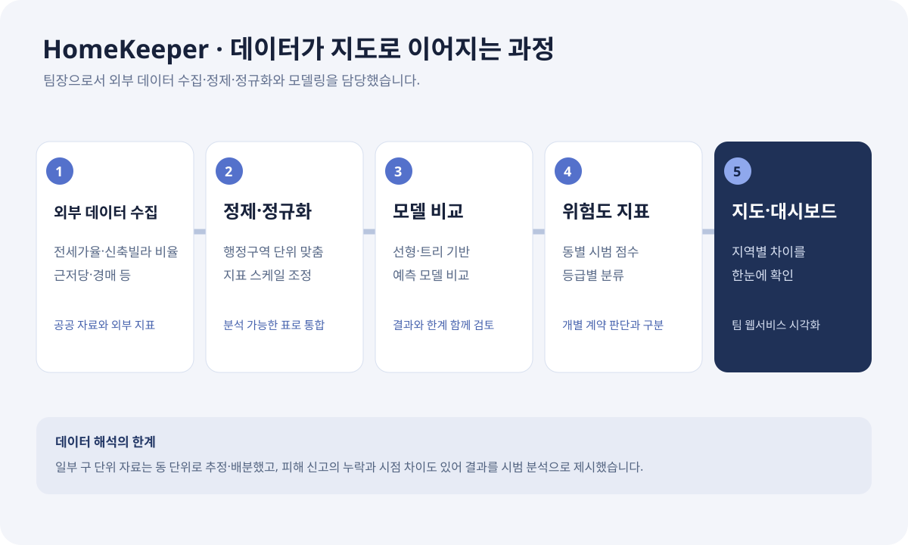

Backend · Data
- Java · Spring Boot
- PostgreSQL · SQL
- Python · Django · DRF
- 외부 API 연동 · 데이터 정리
- REST API · 데이터 저장 구조 설계
BACKEND DEVELOPER · HOSPITALITY · 2026
정유림 · Backend Developer
호텔 업무를 이해하고, 서비스로 연결합니다.
3년 4개월간 객실 예약과 판매 채널의 요금을 관리했습니다.
Django로 외부 데이터를 연결했고, Java·Spring Boot로 제안 검토와 결정 기록 기능을 개발하고 있습니다.
예약·요금·판매 채널을 직접 다룬 경험
외부 데이터 연결부터 검토·결정 기록까지
프로젝트마다 핵심 구현과 근거를 함께
데이터 연결과 검토·결정 기록, 사용자 입력을 지키는 개발 경험.
호텔 판촉실에서 3년 4개월간 객실 요금·판매 가능 객실 수와 프로모션 판매 정보를 운영했습니다. 같은 정보를 여러 판매처에 반복 입력하며 겪은 데이터 불일치를 계기로 Python·SQL과 웹 개발을 배웠습니다.
숙박업주가 매일 사용하는 예약·객실·요금 관리 서비스를 개선하는 개발자로 성장하고 싶습니다. 사용자가 겪는 불편을 구체적으로 이해하고, 동료와 요구사항을 맞추며 기능을 구현합니다.
숙박 업무 이해 · 데이터 처리 · 협업
마케팅 판촉실 · 주임
온라인 숙박 예약 사이트와 객실 판매채널 관리 시스템에서 판매처별 객실 요금·판매 가능 객실 수와 프로모션 판매 정보 등록·수정
고객 요청 정리와 프런트·조리·연회 부서의 일정 및 현장 운영 사항 조율
여러 판매처의 반복 입력과 정보 갱신 시점에 따른 데이터 불일치 경험
1학기 925시간 이수 · Python·SQL·웹 개발·AI 및 팀 프로젝트
2026.12 수료 예정 · 2027년 1월 입사 가능
데이터 분석 교육과정 · 삼성청년SW·AI아카데미 입과로 중도 종료
호텔경영학과 졸업
GotYA · 광주 1반 1등
잇담 · 발표회 3등
까꿍 · 발표회 3등
나의 취향에서 시작하는 영화·도서·문화생활 추천

GotYA · 취향 테스트 질문
AI가 돌려준 추천에 실제 후보에 없는 ID나 같은 콘텐츠가 섞일 수 있었습니다.
응답 ID를 DB 후보와 대조하고 중복을 제외했습니다. 부족한 추천은 준비한 후보에서 채우는 흐름으로 연결했습니다.
원본 코드 발췌 · 이해를 돕는 한국어 주석 추가 · 숫자 줄 번호는 원본 기준입니다.
# AI가 반환한 항목을 하나씩 확인합니다.for raw in raw_rows: raw_id = raw.get("content_item_id") if isinstance(raw, dict) else raw # ID를 숫자로 바꿀 수 없으면 제외합니다. try: content_id = int(raw_id) except (TypeError, ValueError): continue # 중복이거나 DB 후보에 없는 ID는 사용하지 않습니다. if content_id in used_ids or content_id not in candidate_by_id: continue candidate = candidate_by_id[content_id] reason = "" # 추천 이유가 비어 있으면 기본 설명으로 채웁니다. if isinstance(raw, dict): reason = str(raw.get("reason") or "").strip()[:300] selected.append((candidate, reason or _default_reason(profile, candidate))) used_ids.add(content_id) if len(selected) >= per_type: break # 추천 개수가 부족하면 준비한 DB 후보로 보충합니다.for candidate in candidates[content_type]: content_id = candidate["content_item_id"] if len(selected) >= per_type: break # 이미 선택한 항목은 다시 넣지 않습니다. if content_id in used_ids: continue selected.append((candidate, _default_reason(profile, candidate))) used_ids.add(content_id)콘텐츠 유형마다 데이터는 다르지만, 추천·좋아요·찜·후기는 같은 흐름으로 연결해야 했습니다.
공통 콘텐츠 모델과 상세 테이블을 분리하고 외부 데이터 수집·정제·적재와 API를 구현했습니다. GMS를 통한 LLM 추천 연동과 응답 검증·대체 처리를 구현했습니다.
27개 API · 22개 테이블외부 데이터를 하나의 추천 흐름으로 연결하고, LLM 응답을 DB 후보와 대조하도록 구성했습니다. SSAFY 프로젝트 최우수상을 받았습니다.
영화, 도서, 문화생활은 필요한 필드가 다르지만 추천, 좋아요, 찜, 후기 구조는 함께 공유해야 했습니다. 공통으로 필요한 제목, 이미지, 유형, 추천 점수, 외부 링크는 ContentItem에 두고, 영화/도서/문화생활별 고유 필드는 상세 테이블로 분리했습니다. 사용자 상호작용은 ContentItem을 기준으로 연결해 콘텐츠 유형이 달라도 같은 추천 흐름을 사용할 수 있게 했습니다.
사용자 취향과 반응을 바탕으로 DB에서 콘텐츠 후보를 선정하고 GMS의 OpenAI 호환 API로 추천 순서를 보정했습니다. AI 도구를 활용해 코드를 작성했으며, LLM의 역할을 제공된 후보 안에서 순위를 정하는 범위로 제한했습니다.
취향·반응 → DB 후보 선정 → LLM 순위 보정 → ID·중복 검증 → 부족분 보완 → 결과 제공
응답의 ID가 후보 목록에 있는지 대조하고, 중복 또는 유효하지 않은 ID를 제외한 뒤 부족한 결과는 DB 후보로 보완합니다. 호출 실패나 응답 해석 오류는 DB 기반 추천으로 대체하며, 같은 조건의 요청은 캐시를 재사용하도록 구성했습니다.
유형별 테이블만 사용하면 찜·후기에서 콘텐츠 유형마다 참조 경로를 나눠야 하고, 모든 필드를 한 테이블에 모으면 유형별로 사용하지 않는 필드가 늘어납니다. 공통 식별자는 ContentItem으로 통일하고 상세 정보를 분리해 공통 상호작용을 재사용했습니다. 대신 상세 조회에는 연결 조회가 필요하고, 콘텐츠 유형과 상세 데이터의 일치도 함께 관리해야 합니다.

AI 제안을 사람이 검토하고 결정 이력을 남기는 업무 데이터 통합 플랫폼
진행 중 · 백엔드 개발 2026.11.05 기준

백엔드 개발 흐름도 · 실제 반영·통합 검증 진행 중
1 / 1여러 담당자가 같은 제안을 처리하거나 중간에 오류가 나면, 결정 내용과 저장 상태가 어긋날 수 있습니다.
권한과 최신 상태를 확인하고 결정·성공 기록을 함께 처리합니다. 실패하면 변경을 취소하고 실패 기록을 별도로 남기는 원리를 보여줍니다.
내부 소스에서 발췌하지 않은 설명용 의사코드입니다. 실제 기업의 코드·식별자·데이터는 포함하지 않았고, 실제 반영 연결과 통합 검증은 진행 중입니다.
공개한 개발 흐름도 보기 ↗설명용 예시(원본 소스 아님) · 한국어 주석으로 처리 순서를 설명합니다.
Decision decide(Request request) { try { // 결정과 성공 기록을 한 묶음으로 처리합니다. return inTransaction(() -> { // 같은 제안을 동시에 바꾸지 않도록 잠급니다. var item = lockLatest(request.id()); // 처리 권한과 조회 이후 변경 여부를 확인합니다. checkPermission(request.actor()); checkVersion(item, request.version()); // 검토 결과와 성공 이력을 함께 저장합니다. var decision = saveDecision(item, request); recordSuccess(decision); return decision; }); } catch (RuntimeException error) { // 변경 취소 후에도 실패 이유는 별도로 남깁니다. recordFailureSeparately(request, error); // 호출한 쪽에서도 실패를 알 수 있게 전달합니다. throw error; }}여러 업무 시스템에 흩어진 데이터는 이름과 연결 기준이 달라 함께 활용하기 어렵습니다. 데이터를 연결하는 AI의 제안을 담당자가 검토하고, 어떤 근거로 결정했는지 남길 수 있는 플랫폼을 개발하고 있습니다.
현재 개발 작업본 기준입니다. 실제 종류별 데이터 반영 기능과 전체 흐름의 통합 검증은 남아 있습니다.
여러 담당자가 같은 정보를 다룰 때는 화면에 보이는 내용과 실제 저장 상태가 일치해야 합니다. 권한과 최신 상태를 확인하고, 실패한 변경을 되돌리며, 처리 근거를 남기는 과정을 구현했습니다. 호텔에서 예약과 요금을 반복 확인했던 경험을 바탕으로 사용자가 안심하고 사용할 수 있는 업무 시스템을 고민하고 있습니다.
다섯 단어로 시작해, 함께 이야기를 완성하는 창작 게임

잇담 · 도서관 / 공동 책
저장 버튼과 예약된 자동 저장이 겹치면 같은 내용이 중복 저장될 수 있었습니다.
진행 중 요청은 대기 상태로 기록하고, 마지막으로 저장한 내용과 같으면 새 요청을 만들지 않는 분기를 두었습니다.
초기 자동·수동 저장 병행 단계의 코드입니다. 최종 화면이 수동 저장 방식으로 바뀐 내용은 아래 본문과 공개 테스트에서 구분해 설명합니다.
초기 저장 처리 원본 보기 ↗최종 수동 저장 테스트 보기 ↗원본 코드 발췌 · 이해를 돕는 한국어 주석 추가 · 숫자 줄 번호는 원본 기준입니다.
// 내용이 없거나 너무 길거나 저장 중이면 요청하지 않습니다.if (!contentToSave.trim() || content.length > MAX_CONTENT_LENGTH || isSaving) { return null;} // 진행 중인 저장이 있으면(연타·타이머 중복 실행) 버리지 않고 pending으로// 기록한다. 진행 중 저장이 끝나면 최신 내용 기준으로 이어서 저장된다.// 앞선 저장이 끝난 뒤 최신 입력을 저장하도록 표시합니다.if (inFlightSaveRef.current) { setHasPendingSave(true); return null;} // 마지막으로 저장한 내용과 동일하면(수동 저장 직후 예약돼 있던 자동 저장이// 늦게 실행되는 경우) 요청을 만들지 않고 이미 저장된 버전 id를 돌려준다.// 수정 모드는 같은 내용도 새 버전 생성이 목적이라 예외.// 내용이 같으면 새 요청 대신 기존 저장 결과를 사용합니다.if (!isRevisionMode && contentToSave === lastSavedContentRef.current) { return versionId;}자동 저장과 수동 저장이 겹칠 때, 마지막 입력을 잃지 않는 작성 경험이 필요했습니다.
일정·이슈를 관리하고 인증부터 문장 작성, 도서관, 서고, 레이드까지 주요 화면과 저장 상태 흐름을 구현했습니다.
저장 중 추가 입력까지 보존초기 자동·수동 저장 병행 단계에서 중복 요청과 입력 유실을 방지했습니다. 19+ 화면을 구현하고 저장소에 정리한 28개 테스트와 함께 주요 흐름을 검증했습니다. 팀은 SSAFY 프로젝트 우수상을 받았습니다.
자동 저장과 수동 저장이 겹치면 같은 초안이 중복 저장되거나 마지막 입력이 누락될 수 있었습니다. 이를 막기 위해 작성 입력값, 저장 진행 여부, 대기 중인 최신 입력, 서버 반영 결과를 분리했습니다. 저장 중 새 입력이 들어오면 요청을 즉시 겹쳐 보내지 않고 pending 값으로 보관한 뒤 현재 요청이 끝난 다음 한 번 더 저장하도록 구성했습니다.
첫 저장 응답을 0.4초 늦추고 ‘골목’을 저장하는 동안 ‘윤슬’을 추가하는 상황을 재현했습니다. 테스트는 생성 요청 1회, 수정 요청 1회와 마지막 전송 내용 ‘골목 윤슬’을 확인합니다. 같은 내용의 반복 저장은 별도 사례에서 생성 1회·수정 0회로 확인했습니다.
이후 문장 작성 화면은 사용자가 ‘미평가 문장 저장’을 눌러 저장하는 방식으로 바뀌었습니다. 현재 공개 코드의 화면 테스트는 입력 후 1.6초 동안 생성 요청이 0회이고, 저장 버튼을 누르면 1회가 되는지 확인합니다. 위 동시 저장 사례는 초기 구현을 개선한 경험입니다.

흩어진 주거 위험 지표를 모아 서울 동별 시범 분석 결과를 지도로 보여준 프로젝트
HomeKeeper · 로컬 재실행 시범 분석 지도 전체 화면
앞의 두 화면은 로컬에서 재실행한 시범 분석 지도에서 캡처했습니다. 원래 운영 서비스 화면을 재현한 것은 아닙니다. 지도 배경 © OpenStreetMap contributors.
자료마다 지역 이름과 지표의 값 범위가 달라 한 지도에서 비교하기 어려웠습니다.
지역 기준을 확인하고, 크기가 다른 지표를 비교 가능한 범위로 바꾸는 분석 절차를 설명합니다.
원본 분석 노트북 발췌가 아닌 설명용 Python 예시입니다. 원래 모델·점수를 재현하는 코드가 아니며, 실제 수행 범위와 분석의 한계는 아래 본문에 적었습니다.
분석 절차와 흐름도 보기 ↗설명용 예시(원본 소스 아님) · 한국어 주석으로 처리 순서를 설명합니다.
# 분석 흐름을 설명하는 예시입니다.# 원본 데이터는 보존하고 복사본을 정리합니다.metrics = source_data.copy()# 지역 이름 앞뒤의 불필요한 공백을 지웁니다.metrics["region"] = metrics["region"].str.strip()# 같은 지역이 여러 행이면 집계 기준부터 확인합니다.if metrics["region"].duplicated().any(): raise ValueError("지역별 집계 기준을 먼저 확인합니다.") # 단위가 다른 지표를 0~1 범위로 맞춥니다.for column in indicator_columns: values = metrics[column] # 값의 범위가 0이면 나누지 않도록 예외 처리합니다. span = values.max() - values.min() metrics[column] = ( (values - values.min()) / span if span > 0 else 0.0 ) # 지역 이름을 기준으로 지도 경계와 지표를 연결합니다.map_rows = boundaries.merge( metrics, on="region", how="left", # 지역 하나에 지표 한 행만 연결되는지 확인합니다. validate="one_to_one",)주거 위험을 살펴볼 자료가 여러 곳에 흩어져 있고, 행정구역 단위도 달라 지역별로 함께 비교하기 어려웠습니다.
외부 데이터를 수집하고 지역 단위를 맞춘 뒤, 값의 규모가 다른 지표를 정제·정규화해 분석에 사용할 수 있도록 준비했습니다.
서울 동 단위 시범 분석 · 지도 시각화모델을 비교하고 위험도 점수를 지도와 대시보드에서 살펴볼 수 있게 했습니다.
전세가율, 신축빌라 비율, 근저당·경매 관련 자료 등 서로 다른 출처의 지표를 모았습니다. 구 단위로 제공되는 자료를 동 단위 결과와 비교할 때는 배분 방식에 따른 차이도 확인했습니다. 수집한 값을 정리하고 정규화한 뒤 여러 예측 모델의 결과를 비교해 지도에 표시했습니다.

이 지도는 제한된 기간의 자료와 일부 지역 단위 추정값을 사용한 시범 분석입니다. 피해 신고의 누락·지연이나 지표별 집계 기준 차이도 남아 있어, 특정 주택이나 계약의 안전성을 판정하는 용도로 사용할 수 없습니다.
몸으로 조작하고, 제한된 정보를 나누며 탈출하는 3D 숨바꼭질

까꿍 · 도망자 시점의 술래 대면 · 실제 게임 인형 데모
이동·장비 설치·구속 등 상태에 따라 할 수 있는 행동이 달라, 색이나 화면 효과만으로는 현재 상황을 파악하기 어려웠습니다.
서버에서 받은 플레이어 상태를 하나의 상태 값과 안내 문구로 바꾸어 표현했습니다.
원본 코드 발췌 · 이해를 돕는 한국어 주석 추가 · 숫자 줄 번호는 원본 기준입니다.
// 상태는 문구와 data-state를 함께 쓰고 색만으로 전달하지 않는다(V4).// 현재 상태와 사용자에게 보여줄 안내를 함께 정합니다.const [state, condition] = // 구속 상태라면 다른 행동보다 먼저 안내합니다. self.restraintUntilTick !== null && round.serverTick < self.restraintUntilTick ? (['restrained', '구속 중 · 풀릴 때까지 기다리세요'] as const) // 탈출 동작과 장비 설치도 각각 구분합니다. : self.challenge ? (['challenge', '탈출 동작 진행 중'] as const) : self.installation ? (['installing', '장비 설치 중'] as const) // 진행 중인 행동에 따라 회전·이동을 알립니다. : self.action?.kind === 'turn' ? (['turning', '회전 중'] as const) : self.action ? (['moving', '이동 중'] as const) // 진행 중인 행동이 없으면 행동 가능으로 안내합니다. : (['ready', '행동 가능'] as const);술래와 도망자의 목표가 달라, 각 역할에 필요한 정보와 행동 상태를 명확하게 구분해야 했습니다.
역할별 플레이 정보 표시 화면(HUD), 장치 점검, 덫·감지기 설치 피드백과 도망자의 지도 교환 화면을 구현했습니다.
역할별 정보와 조작 피드백 구현술래·도망자에게 필요한 플레이 정보와 장비·지도 교환 화면을 구현했습니다. 팀의 전송 최적화 측정에서는 지도 데이터를 포함한 JSON 상태 전송량을 약 84% 절감했습니다.
모든 지도 정보와 플레이어 정보를 그대로 전송하면 역할별로 보이면 안 되는 정보까지 노출될 수 있었습니다. 서버는 원본 GameState를 유지하고, 클라이언트에는 역할별 StateView만 내려보내는 방식으로 구조를 나눴습니다. StateView에는 현재 플레이어가 볼 수 있는 타일, 엔티티, 장비 상태, 미니맵 정보만 포함해 HUD가 이 데이터만 기준으로 렌더링되도록 했습니다.
본인 담당은 역할별 플레이 정보 표시, 장치 점검, 장비 설치 피드백, 지도 교환 화면과 서버 상태의 연결입니다. 서버 투영 구조와 전송량·부하 수치는 팀 구현 및 검증 결과로 구분합니다.
누적 지도는 변경 시에만 보내고, 수신 측은 knowledgeRevision으로 보관 중인 정보와의 일치를 확인합니다. 버전이 맞지 않으면 재동기화합니다. maze-v1·6명·3,600Tick의 코어·투영 측정에서 JSON 전송량은 356 → 56.8 KB/s로 줄었습니다. 영상·음성과 네트워크 부가 비용을 포함한 전체 서비스 대역폭 수치는 아닙니다.
팀 운영 문서에는 게임 단독 60클라이언트·30분 시험 통과가 기록돼 있습니다. 실제 영상·음성을 포함한 단계별 부하 시험은 해당 기록에서 미실행으로 구분돼 있어, 실제 사용자 60명의 미디어 동시 접속 검증과 구별합니다.

프로젝트의 결과물과 문제 해결 과정을 함께 보여주는 웹 포트폴리오
Portfolio · 프로젝트 목록
상세 창이 열린 뒤에도 배경이 조작되거나 키보드 초점이 바깥에 남으면 읽는 흐름이 끊길 수 있습니다.
선택한 프로젝트만 활성화하고 배경 조작을 막은 다음, 닫기 버튼으로 초점을 옮깁니다.
현재 사이트에서 사용하는 코드입니다. 모달·슬라이드 자동 검사와 브라우저 확인으로 기존 탐색 흐름을 점검합니다.
모달 처리 원본 코드 보기 ↗탐색 동작 자동 검사 보기 ↗원본 코드 발췌 · 이해를 돕는 한국어 주석 추가 · 숫자 줄 번호는 원본 기준입니다.
function openProject(projectId) { // 열 수 있는 프로젝트인지 먼저 확인합니다. if (!projectModal || !projectSlides[projectId]) return; // 닫은 뒤 돌아갈 위치를 기억합니다. lastFocusedElement = document.activeElement; activeProject = projectId; activeSlideIndex = 0; // 선택한 프로젝트만 표시하고 나머지는 숨깁니다. detailPanels.forEach((panel) => { const isActive = panel.dataset.project === projectId; panel.classList.toggle('active', isActive); panel.setAttribute('aria-hidden', String(!isActive)); }); // 첫 화면부터 볼 수 있도록 이미지와 스크롤을 초기화합니다. updateSlide(projectId); projectModal.classList.add('open'); projectModal.scrollTop = 0; projectModal.setAttribute('aria-hidden', 'false'); // 모달 뒤쪽 화면의 스크롤과 조작을 막습니다. document.body.style.overflow = 'hidden'; setPageInert(true); // 키보드 초점을 닫기 버튼으로 옮깁니다. projectModalClose?.focus();}PDF에 길게 쌓인 설명만으로는 프로젝트의 화면과 본인 기여를 빠르게 파악하기 어려웠습니다.
정보 구조와 디자인을 정리하고, 프로젝트 카드·상세 모달·슬라이드와 키보드 탐색을 구현했습니다.
6개 프로젝트 · 반응형 UI실제 화면과 기술적 의사결정, 진행 중 프로젝트의 완료·예정 범위를 함께 확인할 수 있습니다.
카드에서는 프로젝트와 성과를 빠르게 훑고, 상세 모달에서는 하나의 프로젝트에 집중하도록 나눴습니다. 프로젝트명·역할을 먼저 보여준 뒤 실제 화면과 문제 해결 과정을 배치했습니다. 슬라이드는 전체 장수와 현재 위치를 표시하고, 이미지와 조작부를 분리해 작은 화면에서도 내용을 가리지 않도록 구성했습니다.